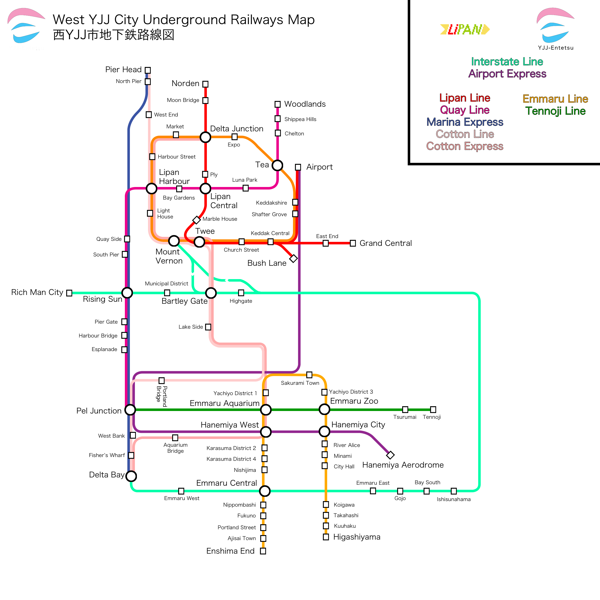

Like many servers, Limaru has a rich and colourful history dating back several versions of Minecraft. Here's how the server started out.
Limaru and YJJ City were originally 1 server under the name "YJJ City". The original YJJ City was a Minecraft Pocket Edition singleplayer world created by YJJcoolcool. The idea of the city came from Mineshafter61's "Village-City", an even older world Mineshafter61 made by extending a village's roads.
After Village-City got corrupted and after many generations of YJJ City, Mineshafter61 and YJJcoolcool came together to make the sixth generation of YJJ City, the last generation of YJJ City made on Minecraft Pocket Edition. This was the most successful generation of the Pocket Edition city, with 3 metro lines of almost 30 stations each.
Note: No working backup of any Pocket Edition YJJ City or Village-City exists today. All existing backups were corrupted during file transfer. The rail map, which was hosted on Google+, was deleted when Google+ closed down.
On 29 August 2018, Mineshafter61 started a server called MMShafter. This server was a flat world with nothing in it. The first player, xxEric0195xx, joined within the first 10 minutes, followed by Solutional. This became the first generation of the "YJJ City Server". However, being a new server, the world was griefed very often. With YJJcoolcool and Solutional being the only reliable staff members, having to check for griefing was tedious as the staff also had to develop the city while other players destroyed it. Around the end of September, a city was finally beginning to take shape.
However, this version was also griefed, this time while one of the staff, Mineshafter61, was online. He had to go to the toilet while another player was online. Within 10 minutes, the server lagged out and could not be started. What made it worse was the fact that YJJ City was hosted on a host that only allowed file transfers if a player is logged in.
Mineshafter61 had no choice but to start from scratch again. This time, he had the help of a few more players, especially PhaelVerdor, who built the spawn building used till this day (except for a small period in time where modern-day Lipan had an airport). The world's generation was the same as the previous one: it featured mineshafts below the ground. Yet, this world was much laggier than the previous. This made Mineshafter61 drop the mineshafts.
The server at this stage was still very prone to griefing. Around 12am one night in January 2019, a member of the server, panas_d, informed Mineshafter61 that a grief was happening, which prompted Mineshafter61 to quickly join the server to resolve it. panas_d would later become the third owner of YJJ City.
Over the next few months, most of the core areas around modern-day Central were developed. The server was pretty much split into a northern English-speaking section and a southern Japanese-speaking section owing to the languages of YJJcoolcool and Mineshafter61 respectively. As a result, rifts developed among the staff. Mineshafter61 and panas_d, who were more popular and active, focused on developing the server "as a whole", creating new towns and places for people to live in, while YJJcoolcool, who prefered the idea of a "functional city", worked on individual buildings that reminded the server members that they are still in Minecraft. During these months, most of the technical work was done by Mineshafter61, who improved the security of the server by revamping permissions and ranks. Solutional and Zac21, two prominent members of the server, also left to continue on their own projects. The server at this point in time was pretty much split between the YJJ faction and the Mike faction.
Tensions between the two factions rose, leading to an attack on a Parliament session in June 2019 predominantly by lower-ranking YJJ faction members. This led to the split of the server between the two factions, creating Mike's West YJJ City and YJJ's East YJJ City.
After this spectacle, East YJJ City moved into a new YJJ City world while West YJJ City stayed on the original world. A wave of de-YJJcoolcoolisation followed, with references to "YJJcoolcool" or "Keddak" removed. The name of the server and country was also changed from West YJJ City to Limaru, a portmanteau of the two states that made up the country: Lipan and Emmaru. To ensure that the server will never be split up again, the government was changed from a unitary government to a federal government, with Prefectural Leaders focusing on players and land use while the heads of state focus on server-wide issues. East YJJ City changed its name back to just YJJ City, and became inactive a few months later after a lack of players.
Development started to pick up pace during this time, especially in Emmaru, now split between the prefectures of Enshima and Tennoji. With the opening of the Tennoji Line a little while before the split, players began to take up towns. Shortwood (then Tennoji), New Traxia (then Enfield), Borewood and Chiyoda became player-made towns, with New Traxia being the most successful of them all. Mineshafter61 also built up Emmaru Central, which used diagonal roads at first, but the idea was later scrapped for a more realistic target.
Lipan was also developed, mostly by CowTS. Limaru saw its first space station near Junction Park station. The airport underwent renovations before panas_d decided on rebuilding the terminal entirely, and the area around Bush Lane saw the most development, with many new roads, buildings, and even a public park. Much of the work went into the trains, which saw a complete overhaul. Through running became a large part of the Lipan train system, and that carried on to the Entetsu train system as well.
Around the start of 2020, development started to slow to a crawl as the city expanded into its limits today. Being such a large server by this point, builders found it difficult to manage all the projects going on at the same time. There was also a decreasing number of players, therefore, Limaru partnered with a few servers to get a boost in server activity. The partnership with Luminis boosted player activeness as the two servers competed to become the better transport and building server. However, it failed to garner players for both as many people were busy with their lives.
Limaru was transferred to a new host in April, which relieved some stress from Mineshafter61's computer as it could not handle the larger computing power required to host a 1.15 server with TrainCarts. The new host proved to also be problematic, thus a series of optimisation efforts were rolled out across the server. All these came to a halt in June, when discussions with another server, Clifton, started. The result of these discussions was a server merger between the two. This was profitable to both servers as Limaru has a regional rail system that depends on how many players start towns, while Clifton needs more players.
However, this all came to a halt after Limaru staff found out that Clifton was imposing undemocratic practices that undermined Limaru's freedom of speech. Therefore, the merger was ruled by the Limaru judiciary council as unconstitutional and was therefore terminated.
Around the same time, relations with YJJ City warmed, therefore YJJ City was merged with Limaru as a symbolic stand against Clifton (and also because YJJ City needed a server host), resulting in the creation of the Two Countries, One System governance that presides over the server today.